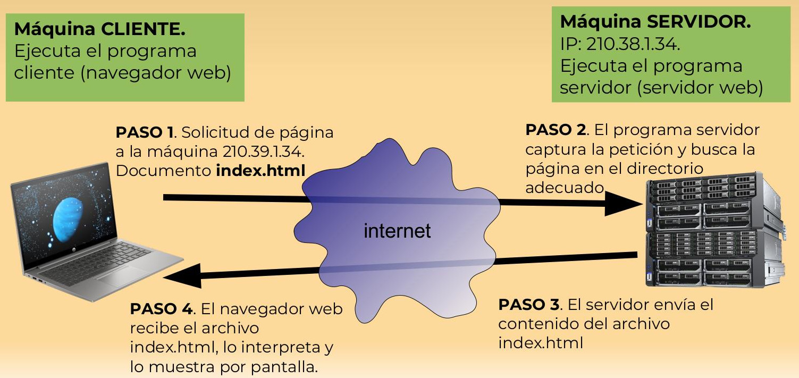
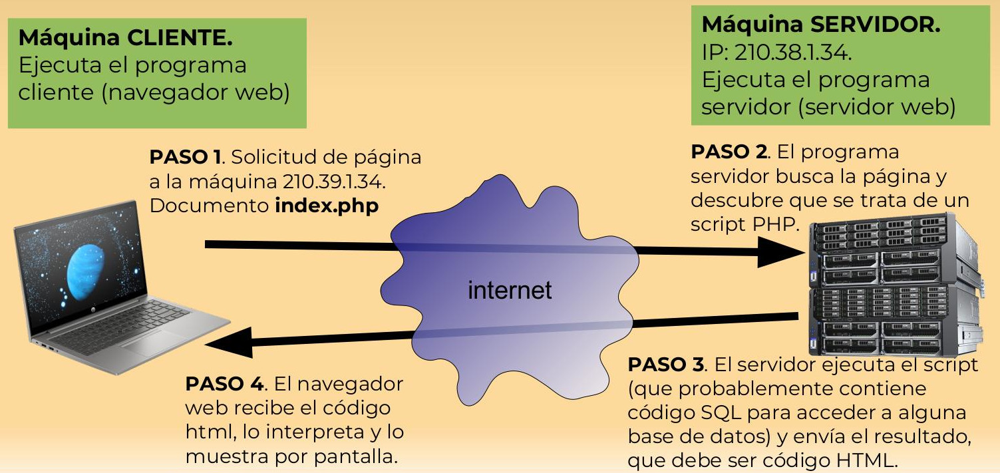
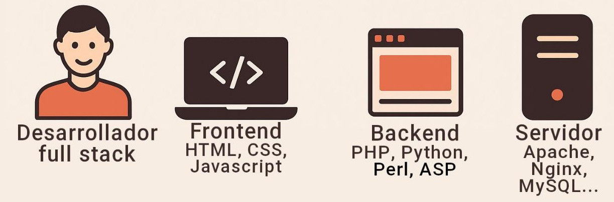
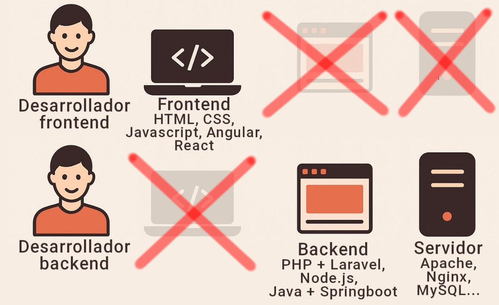
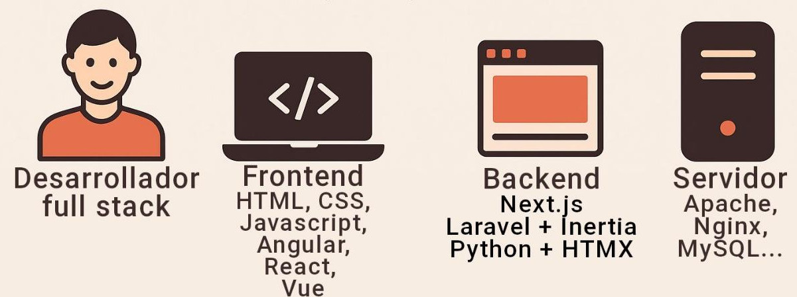

1.1. Programación cliente-servidor
- 1.1.1. Un poco de jerga informática
- 1.1.2. Una petición web 1.0
- 1.1.3. Una petición web 2.0
- 1.1.4. Desarrollo web clásico (años 2000-2010)
- 1.1.5. La revolución SPA (años 2010-2020)
- 1.1.6. Retorno al full stack simplificado (2020-actualidad)
En los primeros tiempos de Internet, no se ejecutaban programas en el servidor. Solo se pedían páginas estáticas (escritas en HTML) más o menos elaboradas que había sido guardadas en el servidor por un administrador de sistemas. A esto se le denominó web 1.0.
A alguien se le ocurrió la idea de que los propios visitantes podrían también crear contenido. Ese contenido se guardaría en el servidor (en archivos o en una base de datos) y posteriormente podría recuperarse para generar con él páginas dinámicas, generadas sobre la marcha. Es decir, documentos HTML que no existieran previamente y que nadie, en realidad, hubiera tecleado, sino que se creasen a partir del contenido almacenado en esos archivos o esa base de datos.
Esa web dinámica estaría generada por un programa ejecutado en el servidor, un programa cuya salida sería HTML válido, comprensible por el navegador que la reciba. A esto se le denominó web 2.0 y supuso una revolución tan grande como el propio nacimiento de Internet.
1.1.1. Un poco de jerga informática
Antes de continuar, tienes que asegurarte de que comprendes bien el significado de algunos términos básicos:
-
Un servidor es un programa que se ejecuta en una máquina conectada a una red y que permanece dormido hasta que una petición procedente de la red lo despierta. Entonces, el programa hace algo (consulta datos, elabora un cálculo, lo que sea) y devuelve su resultado por la red.
Por extensión, un servidor también es cualquier ordenador donde se ejecute un programa servidor. Es decir, usamos la misma palabra para referirnos a un programa y al ordenador donde se ejecuta ese programa. Mala idea, ya lo sé, pero es lo que hay.
-
El cliente es un programa que envía peticiones al servidor para despertarlo. También es el programa que recoge el resultado devuelto por el servidor.
¿Y sabes qué? Que, por extensión, la máquina donde se ejecuta un programa cliente también se llama cliente.
Pues bien, en programación web, nuestro cliente es el navegador web (también llamado cliente web). Cualquier navegador del universo conocido entra en esta categoría. Excepto, tal vez, Internet Explorer (sí, esto es un chiste informático).
Y un servidor es cualquier máquina de la red donde se esté ejecutando un programa servidor web como Apache, Nginx, Tomcat, IIS y otros cuando viejos amigos que irás conociendo a lo largo de este curso.
1.1.2. Una petición web 1.0
Ahora que tienes claro qué es un servidor y un cliente web, puedes comprender el siguiente esquema.
En él, se ilustra lo que ocurre cuando un cliente web (recuerda: tu navegador) envía al servidor la petición de una página estática.
El servidor, en este caso, se limita a enviar al cliente el documento HTML tal cual está almacenado en su disco duro, sin cambiar una sola coma.

1.1.3. Una petición web 2.0
Con la web 2.0 la cosa cambia bastante porque aparecen las páginas dinámicas, aunque tendrás que fijarte bien en el esquema para apreciar la diferencia.
Quédate con lo importante: en este esquema, el cliente web no pide un documento HTML, sino un programa, que puede estar escrito en PHP o algún otro lenguaje. Eso es lo de menos.
Ese programa se ejecuta en el servidor, y el resultado de esa ejecución es lo que recibe el cliente, no el programa en sí.

Pues bien: si un sitio web funciona del primer modo, no es una aplicación web, sino una página web estática. Para que sea considerado una aplicación web, debe funcionar del segundo modo.
1.1.4. Desarrollo web clásico (años 2000-2010)
Cuando comenzaron a crearse las primeras aplicaciones web siguiendo el esquema cliente-servidor anterior, se usaron los lenguajes que en ese momento estaban disponibles en los servidores web (que, en su mayoría, como en la actualidad, estaban basados en Unix/Linux).
Por eso las primeras aplicaciones se programaron en lenguajes como Perl, PHP, Python, Java (JSP) o Visual Basic (con ASP.NET). Con el tiempo, algunos de esos lenguaje evolucionaron y se adaptaron a los nuevos tiempos, por lo que han seguido usándose (como PHP, Java o Python), mientras que otros se quedaron desfasados (como Perl).
En estas aplicaciones, el servidor contenía toda la lógica del programa y generaba una salida llamada “vista” o “view” que se podía visualizar en un navegador web, puesto que estaba codificada como HTML. Esta salida podía incluir CSS para mejorar la visualización y algo de Javascript para dinamizar la vista, pero poco más.
Poco después surgieron los primeros frameworks MVC como Symfony (para PHP), Ruby on Rails (para Ruby) o Django (para Python). Estos frameworks eran librerías que facilitaban el desarrollo web y automatizaban muchas tareas comunes.

1.1.5. La revolución SPA (años 2010-2020)
A finales de la década del 2000 aparecieron las aplicaciones SPA (Sigle Page Application), también llamadas OVA (One View Application). Se caracterizaban porque, cuando el usuario hacia algo en la página, esta no se recargaba completamente, sino que solo se modificaba una parte.
Esto fue posible gracias a que Javascript desarrolló la tecnología Ajax o de peticiones asíncronas, capaz de pedir datos al servidor en segundo plano, es decir, mientras el navegador continuaba funcionando. El usuario no se daba cuenta de que el navegador estaba solicitando datos al servidor ni de que el servidor estaba respondiendo.
El resultado fueron aplicaciones web mucho más dinámicas e interactivas que las que se habían visto hasta entonces, puesto que la página no tenía que recargarse (es decir, pedirse de nuevo al servidor) continuamente.
Muy pronto, todo el mundo quiso tener su propia aplicación SPA, pero esto planteaba un desafío a los desarrolladores: las aplicaciones SPA son mucho más difíciles de escribir que las aplicaciones web tradicionales, puesto que la lógica del programa está repartida de forma bastante caótica entre el cliente y el servidor.
De repente, Javascript había dejado de ser un “juguete” y se encontraba gestionando gran parte de la lógica de las aplicaciones, mientras que los lenguajes más maduros y consistentes, como PHP o Java, se limitaban a implementar una API que consultaba la base de datos y devolvía los resultados como JSON o XML al cliente; es decir, ya no producían vistas complejas en HTML.
Por eso aparecieron frameworks para Javascript como Angular, en primer lugar, y más tarde React, Vue o Svelte. Estos frameworks facilitaban la tarea del desarrollo en el lado del cliente.
Para complicar aún más la cosa, en el lado del servidor también hubo una explosión de frameworks fuertemente incompatibles entre sí. Cada lenguaje tenía uno o varios frameworks para elegir (PHP tenía Laravel, Symfony o Zend; Python tenía Django, Flask o FastAPI; Java tenía Spring Boot o Jakarta; etc.)
El resultado de esta explosión de nuevas tecnologías fue que los desarrolladores web no podían especializarse en todas y, en la práctica, el mercado laboral acabó por dividirse en dos categorías:
- Los desarrolladores frontend, que trabajaban con Javascript y uno o varios de sus frameworks (Angular, sobre todo)
- Los desarrolladores backend, que trabajaban con los lenguajes de servidor y algunos de sus frameworks (PHP con Laravel, sobre todo).
También existía el perfil de desarrollador full stack, que era una persona que conocía las tecnologías del frontend y del backend, pero no se esperaba que realmente las controlase en profundidad.

1.1.6. Retorno al full stack simplificado (2020-actualidad)
La solución de construir cada aplicación web como si fueran dos proyectos casi independientes (SPA en el fronend y API en el backend) es demasiado compleja para muchos desarrollos. Esto ha sido un secreto a voces en la industria durante años.
La solución apareció a principios de esta década, cuando comenzaron a surgir frameworks híbridos que integran frontend y backend, como Next.js, y simplifican en desarrollo. El front y el back ya no son dos mundos separados en cada proyecto, sino que todo vuelve a conformar una única aplicación.
Además de frameworks nuevos como Next.js, basado en Node, algunos frameworks clásicos han sabido reinventarse como híbridos:
- Laravel con Inertia o con Livewire
- Django con HTMX
- Ruby on Rails con Hotwire
Con estas soluciones, la lógica de la aplicación regresa al servidor, con lo que todo el sistema es más fácil de construir y de mantener, pero seguimos teniendo una SPA en el cliente, lo que hace que la experiencia del usuario no se resienta. Se unen así las ventajas de los dos mundos.
Aunque siguen existiendo desarrolladores frontend y desarrolladores backend, el perfil de desarrollador full stack está teniendo un gran crecimiento gracias a estos nuevos frameworks.
